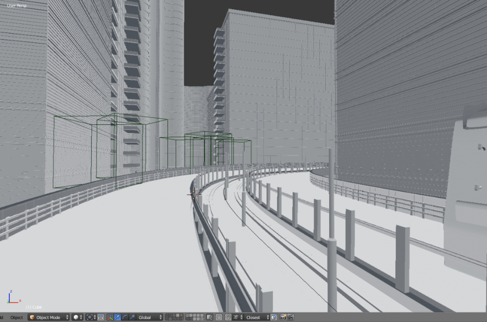
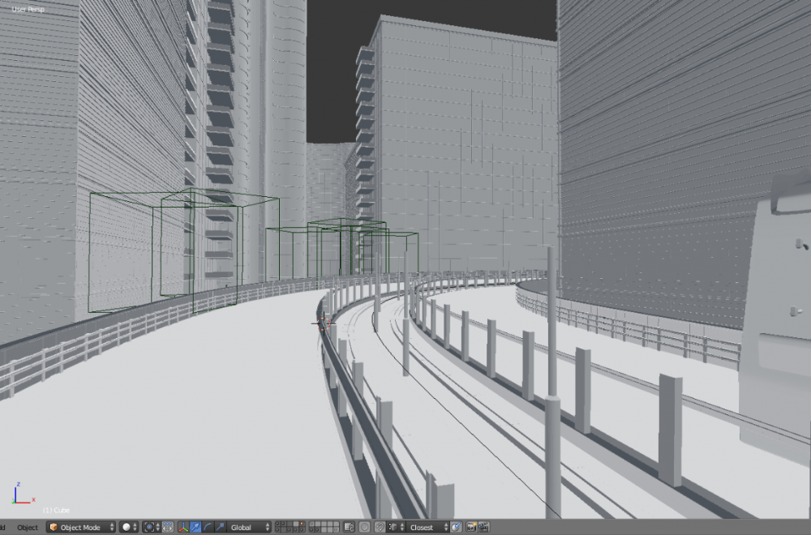

吃饭 (Chi-Fan) is a visual arts / heritage studies project tracing the intimate stories and migration of family recipes across the contested “Chinese diaspora”.
Materialising as a minigame, audiences enter animated kitchens which are vivified by interviews between young people who identify as a member of the Chinese diaspora and their relatives about a family recipe. Each kitchen features: audio ruminations about the recipe; photo essays of the cooking methodology; the dish’s cultural significance; and intimate vignettes of domestic spaces.
By playfully weaving these interpretations of a ‘family recipe’, 吃饭 (Chi-Fan) presents an alternative version of the ‘Chinese diaspora’ - beyond surnames, passports or dialects. The project gives licence for the interrogation of who defines cultural history.
This artwork is by Dylah Goh, illustrated by Amy Ge and coded by Jane Fan. It is a part of the Aftertaste exhibition at Fairfield City Museum and Gallery.
Link to artwork

Throughout literature, film, television and beyond, sentient digital entities are framed as a cautionary tale: a step beyond the ethical limits of humankind into a realm of playing god. In the gestating and early years of our current Internet, stories of rogue agents hijacking our world wide web of pages and hyperlinks explored ideas of post-humanism in these conscious beings. William Gibson’s artificial intelligence Wintermute acts as the omnipotent puppet master throughout 1984’s Neuromancer, guiding the human characters from behind the screen. Terminator’s Skynet similarly co-opted our online resource, turning humanity’s greatest invention into a weapon against its creator. Origin (Marle) explores a new narrative of technological utopianism and community as you explore fragmented memories of our online protagonist.
Origin (Marle) is a collaborative project from Jordan East, Jane Fan, Callum Howard, Pat Younis and Alvin Ruiyuan Zhong and a continuation of their digitally-focused practice as Origin. This work co-opts the ingrained functionality of the Internet, repurposing code and protocols to create a new network composed of fractured text, animation, chatbots and 3D rendered worlds. This artistic intervention into passive web browsing reflects on our crowded and anxious online experiences, bringing audiences into a digital dream as you traverse the system with Marle.
This work was commissioned by 4A Centre for Contemporary Asian Art for their 4A Digital 2022 Programme.
Link to artwork
Cybermancy 2 is an interactive webcam experience based on Chinese face reading, an ancient fortune telling practice that predicts a person’s personality and luck based on their facial features. This work is a continuation of Cybermancy, which is a palm reading experience which presents the user with targeted advertisements and content based on their estimated demographic.
Underneath this non-scientific exterior, analysis is done by AI known as neural networks. The AI generates facial landmarks and predicts age and gender. With this data, the user is presented with generalised information that might fit this demographic, not unlike what advertising tries to do with analytics.
Cybermancy is a demonstration of the modern problem wrapped in the guise of an ancient practice. It is hard to say whether we are being successfully read by others or we are conforming to the predictions presented to us.
This work was commissioned by 4A Centre for Contemporary Asian Art for their 4A Digital 2021 Programme.
Link to artwork
Celestial Bodies was created to explore the challenges of interactive art, one of which is the difficulty in engaging extended thoughtful attention from the viewer. The choice of game engine as the medium makes this especially difficult because of its associated aesthetics and expectations for action and instant gratification. Celestial Bodies counters that by making stillness of the body the action for activation. The dazzling particles effects, normally a source of sensory assault in a game, have been designed to hypotise instead in this artwork. Although the interaction begins as a mirror of the body, awareness of the self becomes lost in the unfolding layers of animations, leading the way into thoughtful contemplation or meditation. This artwork was part of the Origin Parallels Exhibition at Kudos Gallery
Link to Origin Parallels Exhibition
Cybermancy is a AR palm reading experience which presents the user with targeted advertisements and content based on their estimated demographic. Underneath this pseudoscientific exterior, analysis is done by AI known as neural networks. They are advanced enough that they can only be understood as 'black boxes'. Like an audience before a magician, you may observe things going in and out, but not how it is transformed in between. Expectations of magic and science, privacy and exposure collide and merge in this experience. This artwork was part of the Origin Parallels Exhibition at Kudos Gallery
Link to artwork
Synergy is an interative artwork created by the CREATE society at UNSW. I worked as a designer creating sitemaps, objects, overall concept.
Synergy presents as a pretty tableau from nature: a large plywood tree surrounded by similarly stylised ferns. However, this deceptively simple scene is actually a representation of a complex superorganism. Using interactive technology, it demonstrates how inconspicuous microorganisms are absorbed into a greater whole and play a key role in the survival of a greater being. It draws inspiration from mycorrhizal networks where fungi connect and nourish plants, working together to sustain each other.
People can move freely through the work's large area, but when they come into close proximity to the ferns, the whole organism reacts. It shares information visually by pulsing light along the roots towards the central tree, and the lighting on the ferns begins to dance - as if the tree has in turn warned them of approaching danger.
Algorhythmic is a interactive audiovisual experience featuring generative graphics created with Unity and OpenCV. The program tracks people in a space and represents that movement in virtual space filled with responsive particle systems and objects. The animation is then augmented by the speed and frequencies in the chosen song.
Song credit: Reminisce by A Himitsu
Various strange attractor equations were used to drive particle motion to reveal their beautiful mathematical forms. Audio reactivity was also added to control speed and brightness with the use of FFT.
The worms in this sketch are programmatically generated geometry animated with curl noise and vortex equations.
Energy is a interactive floor projection created in Processing and MaxMsp. The particles in the animation respond to the brightest point as detected by a webcam. On the night this was a clear umbrella & torch. Speakers attached to the umbrella also responded to the partipants location on the ground. In this artwork I worked on the programming and on concept design
Collaborators: Siobhan Morrell(object design/construction), Melissa Grasso(sound and object design), Jessica Dallywater (sound and object design/construction)


Sound Tree is an immersive generative artwork that takes the form of a fractal tree that grows and shrinks according to the conversations inside the tent. Sound is picked up by a directional microphone inside the tent, analysed and used as drive the Processing graphics.


Food is a powerful gateway into other cultures, however the stories are not always apparent. 'Taste Memory' features pixel art renditions of dishes from cultural minority groups within and around China. The artworks are in the style of 'cute' pixel art depicting food popular in the 2000s on the internet and in games. These minorities are facing past or ongoing persecution affecting the survival of their identity. However, food can be a strong defense against cultural erasure, especially for migrants, so long as we understand where it comes from.
This artwork was part of the Screenshot online exhibition at Lane Cove Gallery
Real time street model created in Blender Eevee
This is a cyperpunk themed artwork exploring the new physically based rendering workflow for materials


Exploration of skin and clothing material creation with Blender and Zbrush.
3D orchids with photoscanned textures and gold drops
Blender render exploring colour and mood, inspired by Tokyo trains.

 
Original model made for Fallout 4. The challenge was to model/texture/rig a model from scratch but also make a appropiate and meaningful design for an existing universe , in this case for the Railroad faction. The design was inspired by early aviator outfits.


I wanted the try the whole process of designing, modelling, texturing and rigging character armor, so skyrim became my guinea pig. The hard part was none of those things, it was a lack of a updated nif plugin and functional skeleton. I also did some visual research on possible cultural influences for the Redguards and incorporated those.

2d hand drawn illustration over a generative design created in Processing. The background was created by drawing particles over a vector field, with each vector direction determined by Perlin noise

2d hand drawn illustration over a generative glyph design created in Processing.


2d hand drawn illustration over a 3D render background.
Wetwire is a personal project of mine where I play alternative depictions of the Cyberpunk genre. In particular, I am exploring the aesthetics of soft robotics/body modification, active competition between the natural and artificial world, and reframing Asian cultures as the subject of Cyberpunk, rather than the background. It is mainly illustration based, but it is not limited to that format. Some of my creative coding experiments in Processing have also been worked into the backgrounds. Most images in the series make use of 2D hand illustration on top of 3D renders so I can play more with lighting and composition

About Me
I like to apply my programming knowledge in experimental and artistic ways, including but not limited to, generative and interactive art installatons, illustration, 3D art and front-end programming (like this website). I'm always looking for new ways to apply my artistic and programming knowlege together.
Skills
Dotnet // Javascript // Unity // Processing // Computer vision // Blender // Photoshop
Contact Me
jfan9988 (@) gmail.com